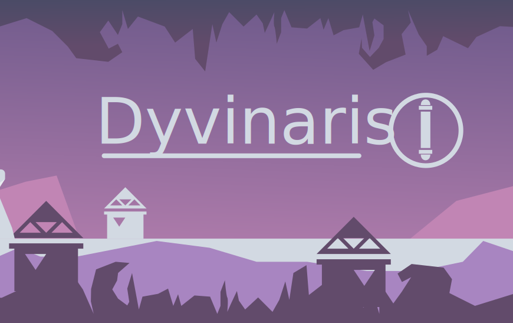
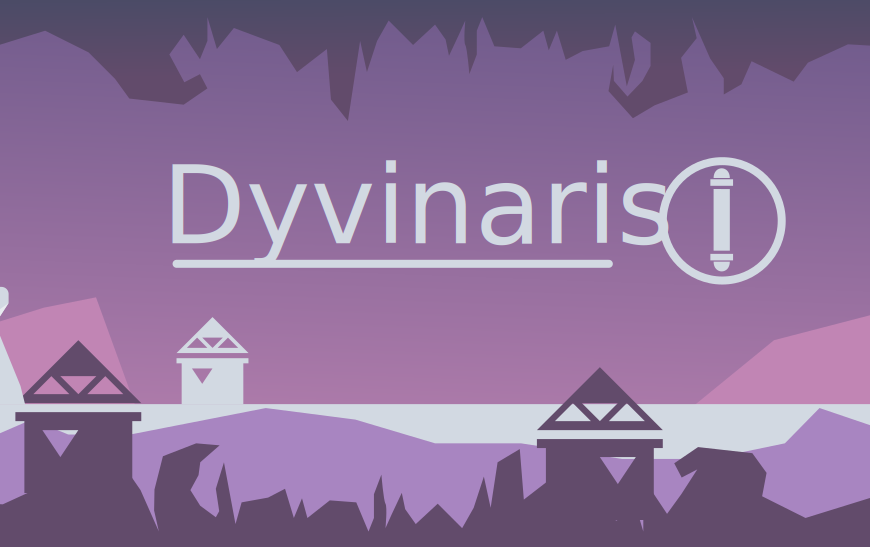

Avant d’être une ville, Dyvinaris était un clan vénèrant la déesse Erena, déesse protectrice du destin
Les dyvinari pensent fermement que la déesse Erena veille sur eux et leur a doté d’un destin tout tracé dés la naissance grâce auquel ils vont accomplir de grandes choses.
📗DESCRIPTION📗
👼LES HABITANTS 👼
C’est un peuple pacifiste, très croyant et tolérant. En sacrifice, à chaque fin de repas ils jettent le reste de leur nourriture dans le feu en offrande à la grande déesse. Ils sont grand avec une peau lisse et très blanche.
🛐LA VILLE 🛐
Leur déesse a un temple tenu par une prêtresse qui se trouve au sommet de la ville et qui baignerait dans une lumière divine.
On l’appelle le Temple du Savoir. Il ouvre ses portes aux âmes perdues en quête de réponses et de leur destiné
🧠MENTALITÉ ğŸ§
Ils sont très croyant et toujours serviables envers autrui mais ils ne sont pas facile à convaincre ils ne croient qu’une seule personne : leur déesse.
⏳HABITUDES ⏳
👨‍🌾LES MÉTIERS👨‍🌾
Paysan : les paysans plantent des patates sur des sorte de grandes colones de terre en forme de vis.
La moisson venue, un animal du nom de moue descend le long de la colonne et ramasse les pommes de terre avec sa queue.
Façonneur : les Façonneurs sont les gens qui construisent les colonnes de terre qui vont servir pour planter les patates.
Éleveur : Ce sont les gens qui élèvent les moues et les autres animaux domestiquement qu'utilisent les divinari.